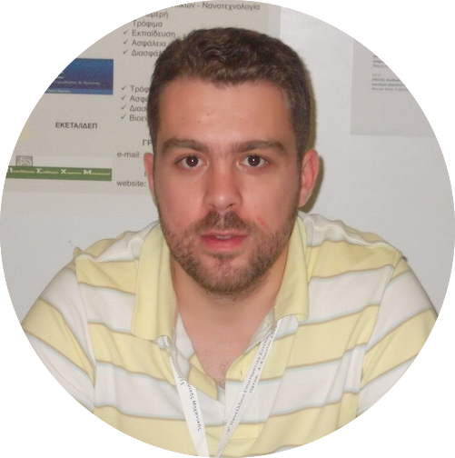
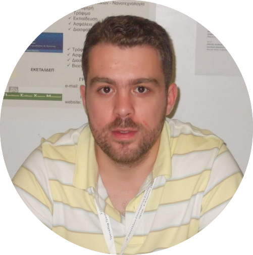

Sotiris Ntouskas


I was born in Athens, Greece, in 1985. I received a Diploma in Mechanical Engineering
in 2009 and an MSc in Automation Systems in 2011 from NTU Athens.
I'm a PhD Candidate in School of Chemical Engineering in NTUA, in the area
of Model Predictive Control for Nonlinear Systems.
My academic interests include Model Predictive Control, Automation Systems,
Robotics, Embedded Systems, Python Programming, Optimization, Artificial Intelligence etc.
In the past I worked as
Mechanical Engineer in food industry, as a web developer for
various companies and as research engineer in research projects in NTUA.
From 2016 to 2019 I was working in space industry for a greek company
as a software engineer, writing and testing software for space missions.
From 2019 up to now, I'm working in National Centre for Scientific Research - "Demokritos",
as a Research Engineer. My tasks include, design and implementation of instrumentation for
microfluidic devices. This means that often I'm working at the intersection point of mechanical
engineering, electrical engineering, programming, electronics and many more.
Like this is not enough, since October 2023, I'm also working in Centre for Research & Technology
- Hellas (CERTH). My tasks there - at least for now - focus on programming in Python for implementing
software for energy flow simulations in building.